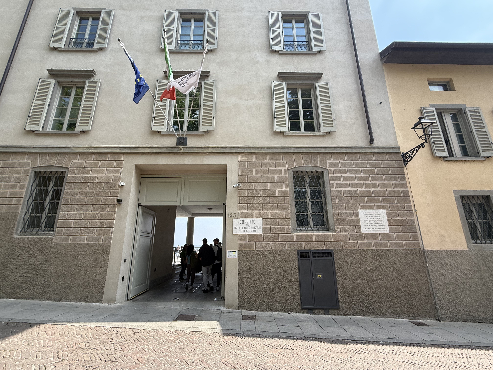
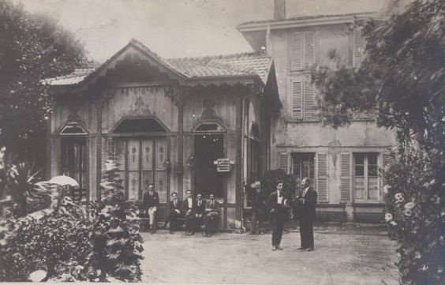

Contesto storico
Ci troviamo davanti al Collegio Baroni, in via Pignolo 123, oggi sede dell’Università degli Studi di Bergamo, nasce alla fine dell’Ottocento come scuola elementare con annesso collegio, voluto dal professor Angelo Baroni. In seguito divenne convitto del Regio Istituto Tecnico Industriale, ospitando studenti provenienti da tutta la provincia.
Durante l’occupazione tedesca, il 3 ottobre 1943, l’edificio venne requisito e trasformato in sede del Comando della Gendarmeria tedesca e in carcere politico.
🎧 Audio Lettura
Perché è un luogo della memoria
Tra il 1943 e il 1945 il Collegio Baroni fu uno dei principali luoghi della repressione nazista a Bergamo. Qui venivano rinchiusi e interrogati antifascisti e partigiani accusati di reati contro l’autorità tedesca, prima del trasferimento nel carcere di Sant’Agata o nel monastero di Matris Domini.
Numerose testimonianze raccontano interrogatori durissimi e torture disumane. Don Mario Benigni subì violenze per giorni, mentre altri prigionieri furono uccisi brutalmente. Questo edificio è simbolo della violenza dell’occupazione nazista e del sacrificio di chi lottò per la libertà.
🎧 Audio Lettura
Contenuti multimediali


Approfondimento: Trasferimento dei detenuti e testimonianze
Secondo alcune testimonianze, nel gennaio 1944 le SS di guardia al Collegio Baroni furono richiamate al fronte e l’edificio venne svuotato dei detenuti nella notte del 21. Sono almeno cinque i testimoni – Franco Maj, Cesare Bonino, Giovan Battista Cortinovis, Luigi Mondini, Giacomo Paganoni – che raccontano di quella notte.
I prigionieri, secondo Cesare Bonino in totale 56 sotto la custodia di circa una decina di SS, furono fatti uscire in cortile sotto gli occhi dei loro preoccupati carcerieri, come nota Cortinovis, e trasferiti al carcere di Sant’Agata, dove dal dicembre 1943 era installato un presidio tedesco.
Non si trattò di una chiusura definitiva del Baroni: ancora nel marzo 1944 vi furono portati partigiani catturati, come Adriana Locatelli e alcuni suoi compagni della banda Maresana. Probabilmente al ridottissimo personale tedesco si affiancava quello fascista.
L’incrocio tra le testimonianze permette di rilevare un’organizzazione sempre più efficiente dell’apparato repressivo fascista, in cui emergono figure come Resmini, Strohmenger, Monge, Ghisleni, Zanchi, Messaggi, che lavorano in completa sinergia con quello nazista.
🎧 Audio Lettura
🎧 Testimonianza audio – Intervista a Franco Mai
Registrazione originale in cui Franco Mai racconta le fasi degli interrogatori subiti dai detenuti nel carcere del Collegio Baroni.
🎧 Testimonianza audio – Diario di una partigiana
Passaggio dal diario di una partigiana detenuta al Baroni, che descrive i maltrattamenti e le torture subite durante la detenzione.
Fonti
Fonti bibliografiche
- Mario Pelliccioli, Itinerari di memoria. Un percorso a Bergamo tra fascismo, occupazione tedesca e Resistenza, Moltefedi Achille Grandi Editore, Bergamo 2023
- Giacinto Gambirasio, In collegio, in Due mesi di carcere, Edizioni Orobiche, Bergamo, 1964